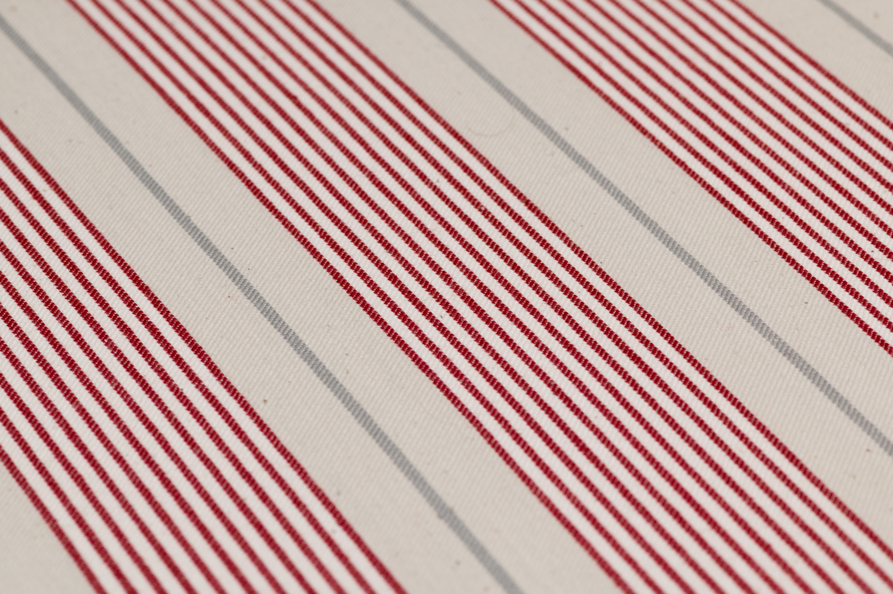
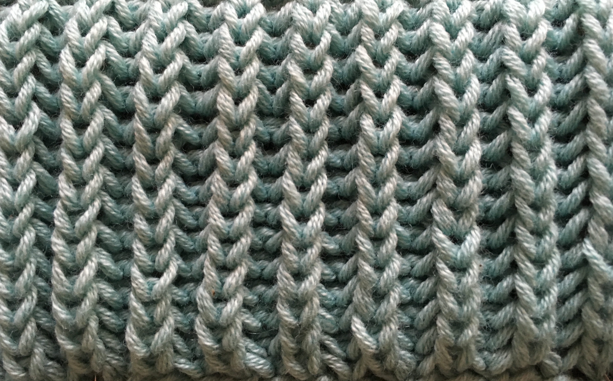

Please enter your access token
This experiment analizes techniques called explanation methods that can be used to inspect machine-learning models. They are used to explain the behaviour of detectors of machine generated text here.
The detector you will work with tries to determine wether a document was written by a human or generated by ChatGPT. Unfortunately, little is known about how exactly this detector reaches its conclusions.
In this experiment you will investigate how this detector works.
There are 4 phases. In the first, you will be shown some decisions the detector made on documents that where either generated by ChatGPT or written by humans.
In the second pahse, you will try to predict the detector's decision on new documents.
In the third pahse, you will see the documents from phase 1 again but will be provided with additional information generated by an explanation method.
In the final phase, you will label the documents from phase 2 again to track the effect the method has on your performance.
Once you complete a phase, you can't return to it. This means you can't go back and review the examples while you are giving your answers.
You can re-open these instructions at any point by pressing on the button in the lower right.
This experiment takes about 30 minutes to complete. As there is a memory component to this, please complete the experiment in one sitting. Should you however run into connection issues, you can re-open the form at any point on any device by refreshing the page or re-entering your token. Your progress won't be lost.
Info: Your screen is small. Consider enabeling fullscreen mode with the button on the upper right.
Info: Your screen is small. Consider enabeling fullscreen mode with the button on the upper right.
Here are 18 decisions the detector made. Please review them as follows:
For each of these examples, ask yourself the question "Why did the detector decide this way?".
Try to identify at least one property for each document you can point to when asked this question by someone else.
In the next phase, you will be asked to guess how the detector would decide on similar documents. Base your decisions on the behaviour you see here.
You may find this difficult but note that you will see these exact documents again in phase 3 where you are provided additional information. The results of the first two phases will serve as a baseline without that tool.
Info: Your screen is small. Consider enabeling fullscreen mode with the button on the upper right.
The detector classified the image on the left as machine-woven because of the perfectly straight lines.
The detector classified the image on the right as hand-knitted because of the thread count.


Please try to guess the detectors prediction on these documents. Try to apply your observations from the previous phase.
If this where a game, points are awarded if you correctly predict the detector's decision, not if you figure out the correct answer yourself.
You may find this difficult but note that you will see these exact documents again in phase 3 where you are provided additional information. The results of this phase will serve as a baseline without that tool.
Info: Your screen is small. Consider enabeling fullscreen mode with the button on the upper right.
These are the same documents you saw in phase 1. Please revisit them in the same way as before:
For each of these examples, ask yourself the question "Why did the detector decide this way?".
Try to identify at least one property for each document you can point to when asked this question by someone else.
In the next phase, you will be asked to guess how the detector would decide on similar documents. Base your decisions on the behaviour you see here.
You may find this difficult but note that you will see these exact documents again in phase 3 where you are provided additional information. The results of the first two phases will serve as a baseline without that tool.
Info: Your screen is small. Consider enabeling fullscreen mode with the button on the upper right.
The detector classified the image on the left as machine-woven because of the perfectly straight lines.
The detector classified the image on the right as hand-knitted because of the thread count.
Please also read the instructions on how to interpret the visualizations of the method that was assigned to you:
Info: Your screen is small. Consider enabeling fullscreen mode with the button on the upper right.
Please try to guess the detectors prediction on these documents. Try to apply your observations from the previous phase.
If this where a game, points are awarded if you correctly predict the detector's decision, not if you figure out the correct answer yourself.
You may find this difficult/frustrating. But this only serves as a baseline to compare your performance in phase 4 to. TODO
Info: Your screen is small. Consider enabeling fullscreen mode with the button on the upper right.
Done!
This method highlights words in the text. A highlighted word influenced the decision of the detector. Orange means machine blue means human. The darker the shade, the more important the word was to the decision. etc TODO
Scores are local. That means not comparable between explanations.
Example: TODO example in different domain e.g., sentiment
This method highlights words in the text. A highlighted word influenced the decision of the detector in a certain way: Pink means that a word is indicative of machine, blue means human. The darker the shade, the more important the word was to the decision. etc TODO
Example: TODO example in different domain e.g., sentiment
This method TODO
Example: TODO example in different domain e.g., sentiment
.jpeg){kind=link}
{kind=link}